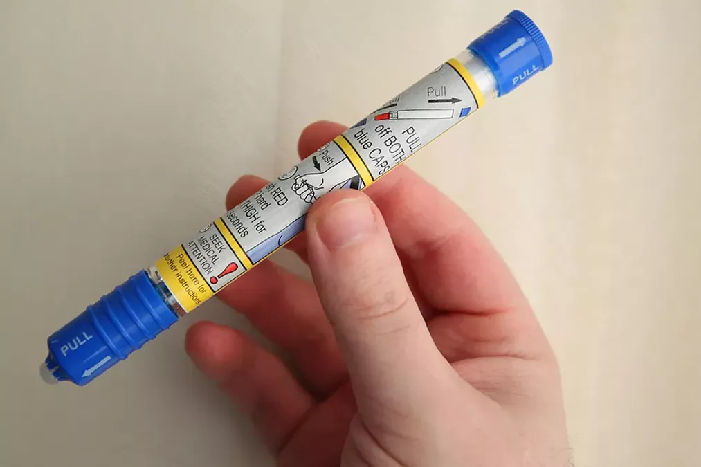

Адреналин

Автоинъекторы адреналина (эпинефрина) — инъекторы для купирования приступов тяжелой аллергией; является средством неотложной помощи при анафилаксии.
При подозрении на анафилаксию раствор адреналина следует ввести как можно скорее внутримышечно, в середину внешней стороны бедра, что соответствует расположению латеральной широкой мышцы бедра. Инъекцию можно повторять каждые 5–15 минут, если реакция недостаточна. Вторая доза необходима в 16–35% случаев. Кому может потребоваться вторая инъекция заранее неясно. Внутримышечный путь введения предпочтительнее подкожного введения, поскольку последнее может иметь замедленное всасывание. Незначительные побочные эффекты адреналина включают тремор, беспокойство, головные боли и сердцебиение.